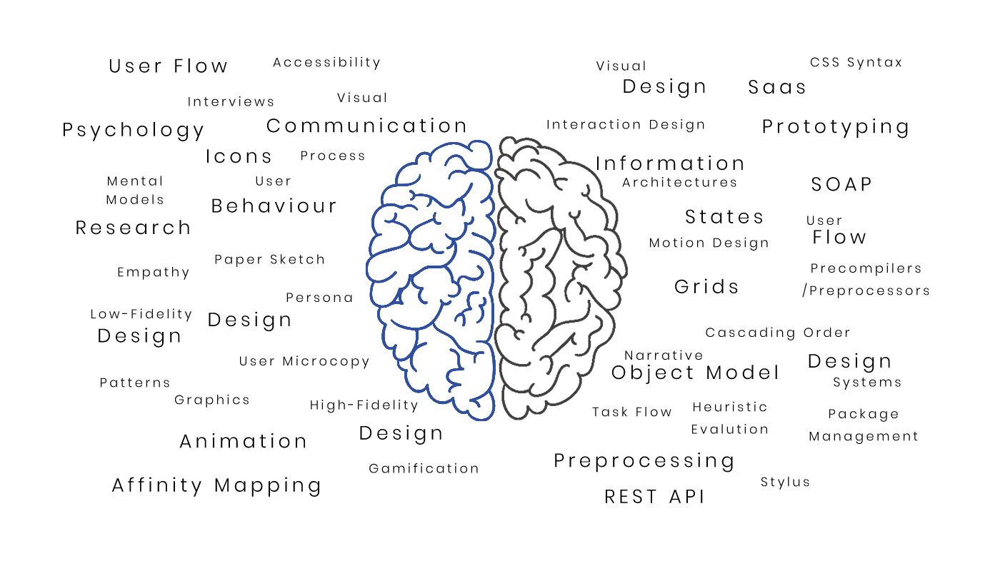

Myself
I‘m a product engineering, with a structure of design and development. The background of my education is heirachy of science & technology outlined with design. With a masters in User Experience Design. I perspectivize design on the basis of creativity and logic. My depth of industrial experience is diverse but can be outlined with Product Engineer, Brand Manager, Creative Head, UI/UX Lead.
Expertises
Design Process
- Understand
-
Combining the experince of design and developlment I undersood the feisibility of design. The design process followed during the research is agile methods with quick and effective manner of collecting resourceful insights. I find this easy to outline the solution with reserse engineering, where you analyze a collection of relevant exsiting solution.
- Explore
-
Endless aspect of prespective towards problem solving challenges which needs to understand user pyschology and enhance the usability. I take really detailed path to structure the application architecture & user navigation as my expertise. I love to frame most optimized framedwork of design system.
- Materialize
-
With a strong background of design and development, I feel the design should be more presentable and visaully apealing. With expertise in Adobe Family and Frontend Frameworks, I feel "UI is the saddle, the stirrups, & the reins. UX is the feeling you get being able to ride the horse." - Dain Miller
Achivement Gallary